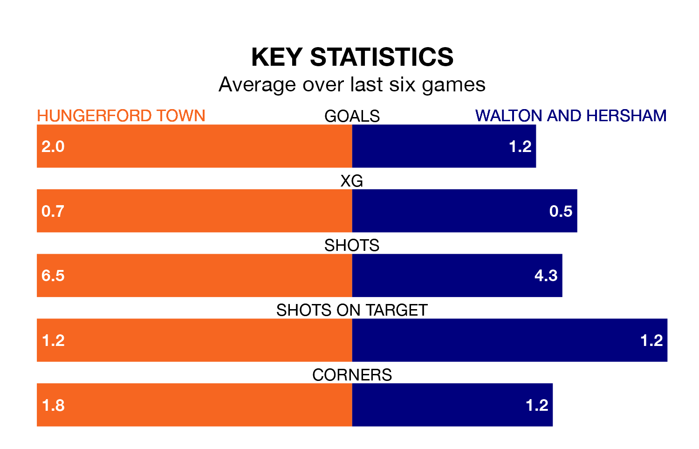

Walton and Hersham travel to Hungerford Town on Saturday in Southern League Premier South.
The visitors come into the game on the back of a defeat in their last match, having lost to Basingstoke Town 2-1 at home.
Hungerford also lost their last match, 3-2 against Hayes and Yeading United.
With 58 goals in 29 games so far this season, Hungerford are the league's second-highest scorers with 2.0 goals per game. But they are conceding more than average too, letting in 55 goals at a rate of 1.9 per game.
Walton & Hersham are also above average scorers, with 1.9 goals per game, compared to a league average of 1.7. They have conceded 1.8 goals per game.
Town are in mixed form in Southern League Premier South, with two wins and a draw from their last six games.
With a win and two draws over that period, the visitors' form is slightly worse – they have taken five points from 18, compared to the home team's seven.
Hungerford are sixth in the table after 29 games, of which they have won 12 and drawn nine, earning 45 points.
Walton & Hersham are three places behind Hungerford in ninth, with 11 wins and six draws putting them on 39 points.
Updated: 14:59 (UTC), 05/02/24